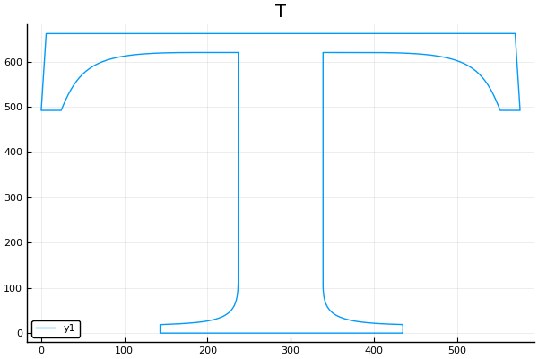

贝塞尔曲线
平面贝塞尔样条
InterpolationPolynomial.bezier_curve — Method贝塞尔曲线
bezier_curve(p1, p2, p3, p4)贝塞尔样条是一个允许用户控制节点处斜率的样条。作为额外自由控制的代价，在节点的处的一阶和二阶导数的平滑性不再能保证，而这种平滑性是前面三次样条本身就具有的性质。
贝塞尔样条适合不时出现角点(一阶导数不连续)和曲率突变(二阶导数不连续)的情况
平面贝塞尔样条的每一段由4个点$(x_1, y_1)、(x_2, y_2)、(x_3, y_3)、(x_4, y_4)$所确定，第一个点和最后一个点称为样条的起点和终点，中间的两个点称为控制点。
曲线以切线方向$(x_2-x_1, y_2-y_1)$离开$(x_1, y_1)$, 并以切线方向$(x_4-x_3, y_4-y_3)$在$(x_4, y_4)$点结束。
满足这些条件的曲线以参数化形式表示为：$(x(t), y(t))$，其中$0 \le t \le 1$
$\qquad \begin{aligned} x(t) &= x_1 + b_xt + c_xt^2 + d_xt^3 \\ y(t) &= y_1 + b_yt + c_yt^2 + d_yt^3 \end{aligned}$
其中：
$\qquad \begin{aligned} b_x &= 3(x_2 - x_1) \\ c_x &= 3(x_3-x_2) - b_x \\ d_x &= x_4 - x_1 - b_x - c_x \\ b_y &= 3(y_2 - y_1) \\ c_y &= 3(y_3-y_2) - b_y \\ d_y &= y_4 - y_1 - b_y - c_y \end{aligned}$
绘制平面贝塞尔曲线
InterpolationPolynomial.bezier_draw — Method绘制贝塞尔曲线
bezier_draw(A)返回绘制曲线的横纵坐标
绘制字母T
using Plots
pyplot()
A = [
237,620,237,620,237,120,237,120,
237,120,237, 35,226, 24,143, 19,
143, 19,143, 19,143, 0,143, 0,
143, 0,143, 0,435, 0,435, 0,
435, 0,435, 0,435, 19,435, 19,
435, 19,353, 23,339, 36,339,109,
339,109,339,108,339,620,339,620,
339,620,339,620,393,620,393,620,
393,620,507,620,529,602,552,492,
552,492,552,492,576,492,576,492,
576,492,576,492,570,662,570,662,
570,662,570,662, 6,662, 6,662,
6,662, 6,662, 0,492, 0,492,
0,492, 0,492, 24,492, 24,492,
24,492, 48,602, 71,620,183,620,
183,620,183,620,237,620,237,620
]
A = reshape(A, (8,16))
x, y = bezier_draw(transpose(A)
plot(x, y, title="T")